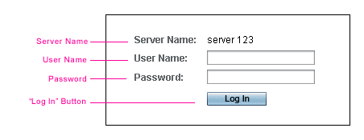
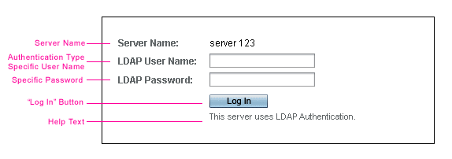
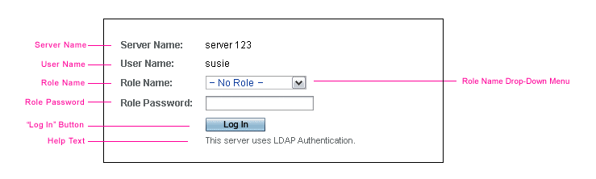
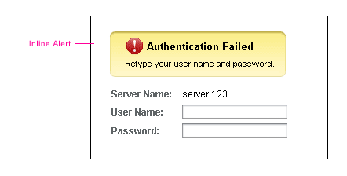

Sun Web Application Guidelines - Version 4.1
Sun Web Application Guidelines - Version 4.1
|
|
|
How To Use These Guidelines - An Introduction
17.1.2 Branding Image with Sun and Java Logos
17.2.1 Type-Specific Form Fields
17.4 Inline Alerts for Login Pages
A Login Page is used to verify the end user's identity and to authorize which applications or tasks can then be made available to that user. A Login Page also gathers security information from the user. This security information may be used later by an application to perform its own security checking or to authenticate to its remote services and agents.
Application teams should reference the design guidelines in this chapter, when developing a Login Page.
For additional information on branding guidelines, see 1.4 Resources for Application Designers.
 The Login Page design is comprised of the following elements:
The Login Page design is comprised of the following elements:
The utility bar is a horizontal bar that spans the page. It contains a global Help button, and a Version button. The buttons offered in the utility bar are analogous, behavior-wise, to those in the application mastheads. To find detailed information regarding the buttons themselves, see 4.1.1 Utility Bar.
The branding image is a single graphic that includes the Sun and Java logos, as well as other design elements that support the brand. This brand element is reserved for use in web applications developed by Sun Microsystems. Otherwise, this element should be replaced with a brand element appropriate to the company or product that they represent.
The branding image border appears to the left and right of the branding image. The border is a visual design element that supports the brand. This brand element is reserved for use in web applications developed by Sun Microsystems. Otherwise, this element should be replaced with a brand element appropriate to the company or product that they represent.
The product name is a .png image. An application development team will need to provision the product name image for their application. For more information on creating product name images, see Appendix C, Product Name Images.
Display appropriate copyright information for your application.
For additional information on developing copyright information, see 1.4 Resources for Application Designers.
The page background is a visual design element that supports the brand, as well as providing an effective backdrop for the user interface elements. This brand element is reserved for use in web applications developed by Sun Microsystems. Otherwise, this element should be replaced with a brand element appropriate to the company or product that they represent.
A typical Login Page form area is comprised of these elements:

Some authentication schemes require field labels unique to the authentication type. In such circumstances, the Login Page may need field labels modified to reflect a unique authentication type, as illustrated in the following design.

Inline help may also be presented to assist users who are not familiar with logging in under certain authentication types. The help text must be brief, and only offer additional explanations pertaining to the authentication type, and related field labels. The inline help could also be instructions, though they should be concise. If the help text needs to be more extensive, then provide a link within it to more extensive help offered through the general Help application. For guidelines about using links within help text, see 11.1.4 Including Links in Inline Help . The use of inline help on the Login Page should only be used if absolutely required.
If the login process requires the entry of more than just a user name and password, an Additional Login Page may be presented. An acceptable use of an Additional Login Page is for collecting authentication data extending beyond that which can be captured on the Login Page. The Additional Login Page must be presented after the initial Login Page has been submitted. If an application uses RBAC authentication, for example, an Additional Login Page must be provided.
 An Additional Login Page, used for RBAC authentication, would typically be comprised of the following elements:
An Additional Login Page, used for RBAC authentication, would typically be comprised of the following elements:

Inline alert messages provide feedback to the user when a login error occurs, and offer a confirmation message when logout is successful.

An inline alert is comprised of an alert icon and summary text, followed by additional text providing details about the alert. For more information about inline alerts, see 14.1 Inline Alerts.
The inline alert should be located in the Login Page form area, positioned above the form area's field labels and below the product name image. On the Login Page, only, the inline alert should be left-aligned to the beginning of the field labels.

| Privacy Policy | Terms of Use | Trademarks | Copyright 2007 Sun Microsystems, Inc. |